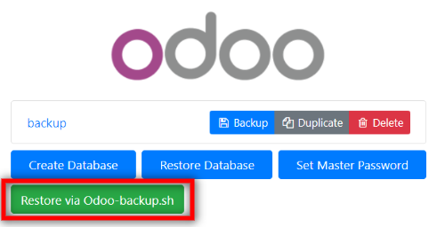

How it works
Go to Backup Dashboard and press Add button

Login into your Odoo account and start your backup process

Main feature: no need to download and upload a database archive via a browser. Also you can encrypting backup archives.
Go to Backup Dashboard and press Add button
Login into your Odoo account and start your backup process
This service provides a wide range of options for managing backups
Save a backup by choosing format you need to and confirm the action with a Master password
Duplicate a backup by setting up a new name and confirm the action with a Master password
Delete a backup by confirming the action with a Master password
Create a backup by filling special forms and confirm the action with a Master password
Restore a backup by choosing an archive and confirm the action with a Master password
Restore backups via Odoo-backup.sh module just pressing appropriate buttons from the right side
Contact us by email or fill out request form